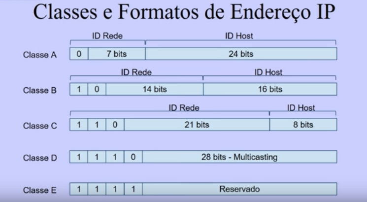
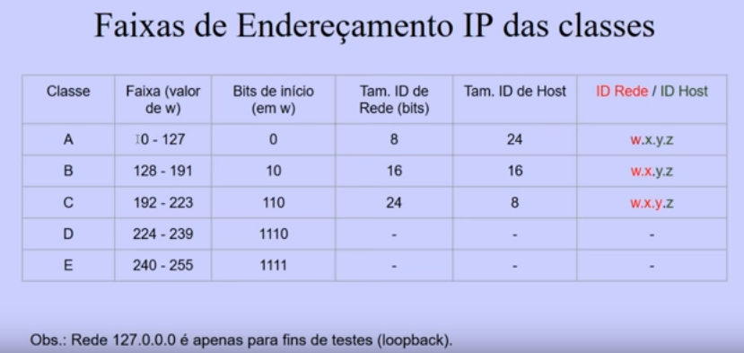
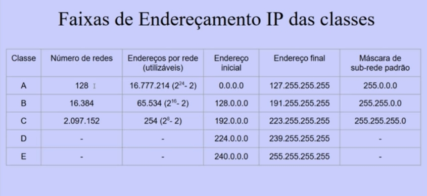
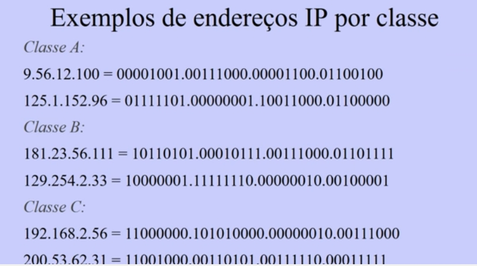
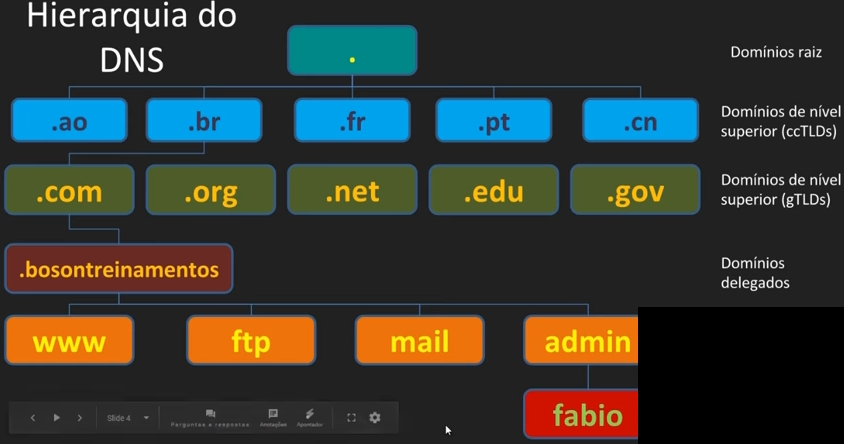
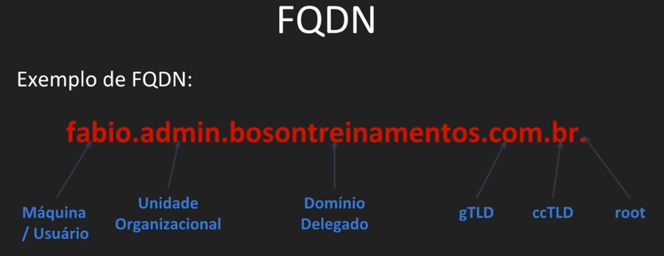
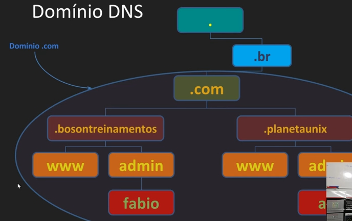
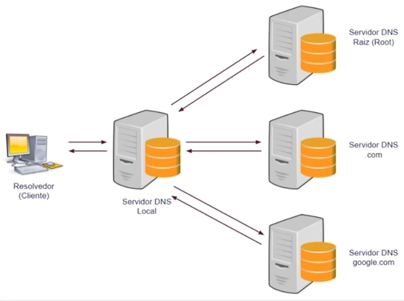

É um identificador exclusivo que identifica um computador em uma rede. Cada interface de rede possui seu próprio IP.
Consiste em um conjunto de quatro números, que variam de 0 a 255. O IP identifica tanto a rede, quando o host (dispositivo), além de permitir a divisão em sub-redes.
Em uma rede, cada dispositivo é identificado por um número chamado endereço IP, que contém:
O ID de rede é a parte do IP que identifica os hosts que estão localizados na mesma rede física. Essas são as regras:
O ID de host é a parte do IP que identifica um host localizado em uma rede. Combinado com o ID de rede, forma o endereço IP. Essas são as regras:
Esse é um exemplo de um endereço IPv4 típico: 185.45.123.55. Esse endereço é composto por 4 octetos, separados por pontos. Cada número pode variar entre 0 e 255 (8 bits), e algumas regras de uso desses números são aplicadas.
As classes de endereço IP são usadas para definir a divisão entre a identificação de rede a e de host. Esse método divide o espaço de endereçamento do protocolo IPv4 em cinco classes por faixas de endereços. As classes de endereçamento são A, B, C, D e E.
A máscara de sub-rede, neste esquema, é implícita para cada classe, não necessitando ser especificada de forma separada. Esse esquema, na verdade, foi descontinuado com o advento do CIDR (Classless Inter-Domain Routing) em 1993. Ainda é encontrado em casos específicos, como configurações padrão de alguns componentes de hardware e software de redes. Especificação RFC 791.
Essas são as aplicações das classes de rede:
Veja abaixo as classes e formatos de endereços IP:
Especificamos as classes de endereçamento de acordo com o valor do primeiro octeto do endereço, no esquema w.x.y.z. O primeiro octeto, representado por w, será o identificador da classe, tanto em decimal quanto em binário.
Essa é a faixa de endereçamento IP das classes:
E essas são as faixas de endereçamento:
PS: Lembrando que o primeiro e o último número são excluídos dos utilizáveis.
Veja os exemplos de endereços transformados em binários:
DNS (porta 53) é uma sigla que significa Domain Name System, que traduz nomes legíveis por humanos em endereços IP, utliziados pelos computadores, assim só precisamos nos lembrar do endereço do site (por exemplo, https://www.google.com.br/) ao invés do IP do mesmo. Basicamente, é um banco de dados de informações sobre hosts.
Essas são algumas das características do DNS:
Veja abaixo a hierarquia do DNS:
Os servidores raiz (root) sabem onde estão os servidores de nomes autoritários para cada zona de nível superior. Existem 13 servidores raiz espalhados em diferentes partes da rede (clusters na verdade). Seus nomes são a.root-servers.net até m.root-servers.net.
Um conceito muito importante também é o de FQDN (Fully Qualified Domain Name), que contém o nome completo de um domínio. Hierarquia completa de um dispositivo, como um servidor ou uma máquina cliente (em uma rede local). Sequência de rótulos de um nó até a raiz (root), separados por pontos.
Veja um exemplo abaixo:
O servidor DNS é chamado de nameservers (servidores de nomes), são programas que armazenam informações sobre o namespace do domínio. No geral, possuem informações completas sobre uma parte do namespace, chamada de zona, que é carregada a partir de um arquivo ou de outro nameserver. Um nameserver é autoritativo para essa zona.
Veja como é o exemplo de uso de domínio DNS:
Na imagem acima, a parte referente à bosontreinamentos pra baixo é uma zona DNS, o de planetaunix é outra zona.
Esse são os tipos de nameservers:
As partes de uma URL são essas:
http:// ou https://.www, mas temos vários outros como mail, admin, blog ou mesmo personalizados.https://www.google.com/..com, .net, .edu, .gov, .org, entre outros..br, .ar, .uk, .pt, etc.https://www.google.com/search?q=dominio).tabela, que por sua vez encaminha o pedido do cliente ao servidor relacionado à URL digitada pelo usuário, sendo utilizado o endereço IP.
DNS Resolver é o serviço cliente que acessa o servidor DNS. Responsável por iniciar e seguir as consultas que levam à resolução de nomes do recurso procurado. O resolver é responsável por executar uma consulta, interpretar as respostas e retornar a informação ao programa que a requisitou. As consultas DNS podem ser não-recursivas, recursivas, iterativas ou ainda uma combinação desses tipos.
Veja abaixo o mecanismo de resolução de endereços:
No caso, o resolvedor acessa um site (como o Google) pelo IP, quando digitamos o nome do site, e ele enviará ao servidor DNS Local (ou mais próximo), e se ele tiver a resposta, ele a envia para o resolvedor, senão ele consulta o servidor raiz, que "informa" que ele está no .com, o local volta e pergunta pro servidor .com, volta e ele procura o google.com e assim por diante.
Existem três métodos de consulta que um resolver pode utilizar para executar uma query DNS: Consulta não-recursiva, consulta recursiva e consulta iterativa. Um resolvedor pode utilizar uma combinação dos métodos de consulta se for necessário.
Na consulta não-recursiva, o cliente resolvedor DNS consulta um servidor DNS que fornece um registro para um domínio no qual ele é autoritativo, ou então fornce um resultado parcial sem consultar outros servidores. No caso de uso do Cache DNS, a consulta não-recursiva é feita sobre o cache DNS localda máquina e fornece um resultado sem a necessidade de realizar consultas repetidas a servidores DNS remotos, reduzindo assim a carga sobre esses servidores, durante um período de temp determinado.
Na consulta recursiva, o cliente resolvedor DNS consulta um único servidor DNS, o qual então pode consultar, como se ele fosse um cliente, outros servidores DNS em nome do cliente em si. Um exemplo clássico é o de um roteador banda larga caseiro, que age como servidor DNS (stub resolver) para as máquinas na rede local, e realiza consultas recursivas ao servidor DNS do provedor de internet. Em uma consulta recursiva o servidor DNS fornece uma resposta completa, ou informa um erro, consultando outros servidores DNS conforme necessário.
Na consulta iterativa, o cliente resolvedor DNS consulta uma cadeia de um ou mais servidores DNS. Cada servidor encaminha o cliente ao próximo servidor na cadeia, até que um servidor consiga efetuar a resolução de nomes de forma completa. Por exemplo, uma resolução do endereço https://www.google.com.br/ poderia ocorrer com uma consulta a um servidor raiz global (root), depois consulta a um servidor .br, depois a um servidor .com, até chegar ao servidor google.com.br.
O cache DNS é uma técnica de redução da carga nos servidores DNS por meio do armazenamento local (ou em hosts intermediários) dos resultados das consultas, conhecido como "caching". Todo resultado de uma consulta DNS é associado a um TTL (Time To Live), uma data de expiração após a qual os resultados são descartados ou atualizados. Essa temportiação é configurada pelo admin no servidor autoritativo, e pode variar de segundos a semanas. Assim, alterações nos registros DNS não se propagam imediatamente pela rede, requerendo que os caches expirem e seja atualizados após o prazo do TTL.
Para ver o cache DNS, abra o prompt de comando e digite ipconfig /displaydns. Ele mostrará vários sites visitados.
Para ver dados sobre o servidor do site, usamos o comando nslookup assim: nslookup -q=ns www.google.com.br
E também podemos verificar online dados dos servidores, com esse site: https://www.whoishostingthis.com/
PS: Os métodos acima retornam dados diferentes.
Podemos também usar o ApateDNS para vermos os domínos DNS abertos do nosso sistema, incluindo os suspeitos, ele não precisa ser instalado: https://www.fireeye.com/content/dam/fireeye-www/services/freeware/sdl-apatedns.zip
Grande parte dos usuários possuem bastante dúvida em diferenciar as duas questões, muitos acham que ambas são a mesma coisa, pois alguns serviços para usuários mais leigos oferecem a ligação direta entre o domínio e o servidor de hospedagem.
Domínio é o registro de um nome, que é utilizado para conectar seu site à sua hospedagem através de uma palavra ou sequência de caracteres com a finalidade de facilitar o acesso ao seu site através de um navegador de internet.
Diferente do domínio, que faz apenas a ligação de seu site para que ele seja acessado através de uma palavra ou sequência de caracteres, a hospedagem é um como um espaço online reservado para seu site na internet, é por meio dela que você armazena os arquivos que mantém seu site no ar.
Existem diversos tipos de planos para diferentes tipos de questões que você precise hospedar. De acordo com seu projeto ou plano de negócio podem haver vantagens ou desvantagens em cada modelo de contratação, portanto, antes de escolher seu plano de hospedagem, mensure o quanto de servidor você irá precisar e quais compatibilidades ele precisa ter para que o seu funcionamento seja como o esperado.
Desde que você adquirir o registro de um domínio e também um plano de hospedagem, você também pode utilizar esse domínio para poder ter um ou mais e-mails personalizados. Ou seja, se seu domínio é meusite.com.br, você pode ter um e-mail como: contato@meusite.com.br.
Portanto, quando você contrata seu plano de hospedagem, você pode criar um ou mais e-mails, a depender do seu plano, de forma mais profissional, trazendo a própria logomarca, seu próprio domínio. Além disso, para planos de hospedagem que lhe permitem a criação de diversas contas, você pode estar criando e-mails personalizados para setores da sua empresa, ou ainda para cada funcionário, ou colegas de trabalho.
O arquivo hosts é usado para relacionar hostnames a endereços de IP. O arquivo pode ser editado como administrador/root com um editor de texto comum.
Este arquivo no Windows se localiza em C:\Windows\System32\drivers\etc\hosts e no Linux em /etc/hosts.
A sintaxe básica do arquivo é essa:
# Tudo que tiver hashtag é comentário
# Primeiro passamos o IP e depois o nome do host para o qual será associado a ele
127.0.0.1 localhost
# Para um exemplo de configuração de roteador, onde o gateway padrão usa o hostname "roteador":
192.168.15.1 roteador.online
Nesse caso, podemos acessar nosso roteador digitando http://roteador.online/ no nosso navegador.
Podemos também redirecionar um domínio para outro IP, inclusive públicos, como esse exemplo abaixo, que redireciona o site do Google para o IP de loopback do nosso dispositivo, usado para bloquear o acesso ao Google:
# Use todos os domínios possíveis para bloquear geral:
127.0.0.1 www.google.com.br
127.0.0.1 google.com.br
127.0.0.1 www.google.com
127.0.0.1 google.com
PS: Isso também pode ser usado por malwares que alteram o arquivo em questão, fazendo que eles redirecionem sites legítimos como o do Google, Facebook ou qualquer outro, para um IP onde está um site falso de phishing, portanto, fique alerta com entradas estranhas nesses arquivos, como por exemplo:
# Isso seria um exemplo de um IP de um site falso,
# para onde os links do Facebook seriam redirecionados:
122.215.182.11 www.facebook.com
122.215.182.11 facebook.com
122.215.182.11 web.facebook.com